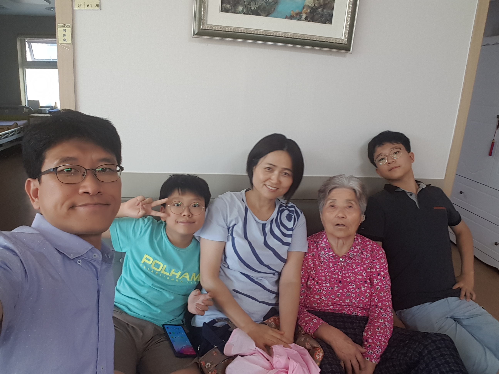

현상^^현서
현상이의 겨울방학 목표
현서의 겨울방학 목표
현상이의 겨울방학 목표
현상이
의 '19~'20
겨울방학
을 보람있게 보내기 위한 프로젝트
현상이가 이번에 집중할 수업
1. 미라클영어 정복
미라클영어훈련원
에서 하루 6시간 강훈련!
월화목금 아침 9시에서 오후 3시 40분까지
점심식사 시간 45분. 엄마가 도시락을 안싸준 날은 짱구 분식에서 사먹기
복습에 복습을 통한 훈련으로 영어를 도구로 다루는데 익숙해지도록 하자
